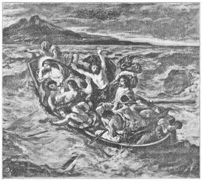

22
STIRRING TIMES
动荡的年代

IT WAS the year 1793. The French Revolution had overthrown the government of the King of France. The common people had stood hardships and injustice until they could stand them no longer. Then they had struck. France had been made a republic. The heads of hundreds of people—enemies of the republic—were being cut off. The king and his family had been put in prison. It was voted that they too should lose their heads.
One of the men who voted yes to the question “Shall the king be killed?” was Jacques Louis David. David was a painter. He believed the revolution was right, even though he had been one of the court painters. By court painter we mean the king’s own painter.
Some of the revolutionists had read about the old Roman republic that you have read about in your history books. They liked to think of themselves as strong and brave like the ancient Romans. They liked to think of their republic as like the old Roman republic. So it became the fashion in the revolution to imitate the old Roman heroes. David got the actors in the theaters to wear Roman costumes instead of French clothes. Soon other people were trying to dress like the Romans. They even made their furniture in imitation of Roman furniture. David found that the people wanted Roman pictures, so he painted many pictures of scenes from Roman history.
Nowadays we think that David’s paintings are not so wonderful as the revolutionists thought them. But they are important because they set a style in painting. The old Roman and Greek days are known as the classical times, and so this style that David made so popular is called the Classical style of art. And David and the other Classical style artists said that no other kind of painting was worth doing. They made many rules for painting that they expected all good artists to follow.
David had begun painting pictures of the Romans even before the revolution. One of these paintings is called “The Oath of the Horatii.” If you have read your Roman history carefully you will remember that the Horatii were three brothers who were champion fighters. Rome was at war with another city. Instead of letting the two armies fight, which would have meant the death of many men, each side agreed to pick three fighters and let them fight it out to see which city should win the war. The Romans chose the three brothers, who took a solemn oath to win for Rome or die trying. David’s picture shows them taking this oath.
When the fight was ended, two of the brothers had been killed. But the third one had managed to kill the other three fighters and so to win the war for Rome.
Another famous Roman picture by David shows the women stopping the fight between the Romans and the Sabines by running out between the two battle lines. You will find this picture is used to illustrate many Roman history books.
David was also a portrait painter. He painted a portrait of a French lady, Madame Rècamier, who is shown lying on a couch. The couch is Roman in style and the lady’s dress shows the Roman styles that French women wore then.
After the revolution came Napoleon. Napoleon made himself Emperor of France. David admired Napoleon greatly and painted several pictures of him. He painted him on a rearing horse, crossing the Alps. He painted him being crowned emperor. (Napoleon crowned himself.) He painted him on the battle-field.
But after Napoleon, there came another king——of the same family as the poor king who had lost his head. Naturally, David wasn’t court painter to him——not after having voted for the other king’s death! In fact, David had to run away from France, and he lived in Brussels for the rest of his life.
But the strict rules of the Classical style of art lived on. David had had many pupils and some of them became famous painters, too. One of these pupils was the artist Ingres. Ingres was a wonderful draftsman. That means the lines that he drew were beautifully done. He thought more about the lines in a picture than the color or the light. All Classical painters tried to make the lines and shapes in their pictures more important than the colors. So their colors are dull and lifeless. Ingres is probably best known for his portraits. And the 106 portraits that he drew in pencil and did not paint at all show how great a draftsman he was.
Baron Gros was another pupil of David, and it was too bad that he was, for the Classical pictures he painted, as much as possible following David’s strict rules, were not so successful as those he painted in another style. Gros kept trying to paint great Classical pictures and was broken-hearted when he found he couldn’t do them well. His really fine pictures he thought little of, because they were not about Greeks and Romans. These others are interesting to us because they pictured the events that were taking place then, which Gros painted well because he had seen them.
Napoleon thought it would be a good idea to have a painter with his army. So he made Gros Inspector of Reviews in the army so that the painter could go with the troops and paint the battles. Gros watched the fighting himself, and so he did not paint war as a glorious thing. He showed the heroism of the soldiers, but he showed their terrible suffering too.
Now we come to a French painter who did not believe at all in Classical painting. The strict rules that the Classical painters said all artists should follow made this artist angry. He was Delacroix. Delacroix led a revolt against the Classical style of painting. Painters who thought as Delacroix did were called Romanticists. The Romanticists didn’t see any sense in painting Greeks and Romans. They wanted to paint what was going on in the world at that time. The Romanticists revolted against the Classical style in another way. They believed in color. They thought color was more important than beautiful line drawing.
Of course the Classical painters hated the Romanticists and tried to do all they could to stop them. But Delacroix and his followers became more and more popular and finally they took the place that the Classical artists had once held.
Delacroix painted pictures of the Crusaders, of Bible stories, of the people of Algiers, of the war going on in his time between the Greeks and the Turks (he was all for the Greeks), and of many other subjects. The picture below shows a scene from the Bible. I hope you will see it some day in colors. Delacroix’s drawing was not always as good as that of other artists but his coloring was very good indeed.

No.22-2 CHRIST IN THE BOAT（《基督在船上》） DELACROIX（德拉克洛瓦 作）
Courtesy of the Metropolitan Museum of Art
One of Delacroix’s paintings is called “Liberty Leading the People.” It is supposed to show a scene in a new French Revolution that took place in 1830 when there was fighting between the people and the soldiers of the king in the streets of Paris. It is a stirring picture, full of action and movement. It has really a double meaning. The Classical style of painting that tried to keep all other ways of painting out of France needed to be overthrown too. And this picture may be thought of as Liberty leading Romantic art against the too-strict rules of Classical art.
【中文阅读】
那是1793年。法国大革命推翻了法王统治的政府。法国普通百姓一直忍受着法王的残暴和不公平的统治，直到有一天，他们实在不能再忍受了，于是奋起反抗。从此，法国变成一个共和国。成百上千反对共和制的人被砍了头。国王及其家人被关进了监狱。人们投票决定国王一家也应该被砍头。
对“国王应该被处死吗”这个问题投赞成票的人中，有个叫雅克·路易·大卫的。他是一个画家。他相信革命是正确的，尽管他自己曾经是一名宫廷画师。所谓宫廷画师就是指国王的御用画家。
有一些革命者读过古罗马共和国的故事，就是你在历史课本上读到的那些故事。他们喜欢把自己想象成和古罗马人一样强壮勇猛。他们还喜欢把自己新建的共和国想象成古罗马共和国。所以，在法国革命时期，模仿古罗马英雄人物成为一种潮流。大卫让剧院的演员穿上罗马的服饰，而不是法国的服装。很快，其他法国人也开始尝试仿照罗马人的穿着。他们甚至把自己的家具都设计成罗马时代的样式。大卫发现人们都喜欢有关罗马时期的画，所以他绘制了许多罗马历史中的场景。
不过，在我们今天看来，大卫的画并没有像那些法国革命家认为的那样完美。但他的画倒真是非常重要，因为它们开创了一种新的绘画风格。古罗马和古希腊时代被认为是“古典主义时代”，所以大卫普及起来的这种绘画风格就被称作“古典主义画派”。大卫和其他古典主义画家都认为，其他任何类型的画都不值得去画。他们还制定了许多绘画规则，希望所有的画家都遵守这些规则。
甚至早在法国大革命开始之前，大卫就已经开始画罗马人了。其中有幅画叫做《荷拉斯兄弟之誓》。如果你仔细读过罗马历史，那肯定会记得，荷拉斯三兄弟都是一流的战士。当时，罗马正与另一座城邦进行战争。如果双方军队交战，肯定会导致许多人死亡，于是，双方达成一致，各自挑选出三名战士进行搏斗，一决胜负。罗马人挑选了荷拉斯三兄弟，他们庄重地宣誓，表示一定要为罗马赢得战争，否则将以死谢罪。大卫这幅画描绘的正是这三兄弟宣誓时的情景。
搏斗接近尾声时，其中两个兄弟已经被杀。但是，第三个兄弟却成功地将三个敌人全部杀死，从而为罗马赢得了这次战争。
大卫还有一幅关于罗马的画非常出名，画的是许多妇女跑向战场在双方的战线中间，试图阻止罗马和萨宾之间的战斗。你会发现这幅画被许多罗马历史书用作插图。
大卫也是一位肖像画家。他曾为法国贵妇雷卡米埃夫人画过一幅肖画像，画中的雷卡米埃夫人正躺在沙发上。沙发是罗马样式的，这位夫人的服饰也是罗马风格，当时法国的女性都很时兴这种穿衣风格。
拿破仑在法国大革命后出现了。他自立为王。大卫无比崇拜拿破仑，还替他画了几幅画像。他画过骑马穿越阿尔卑斯山时的拿破仑、加冕时的拿破仑（拿破仑自己为自己加冕），以及战场上的拿破仑。
拿破仑战败后，又一位国王登基。他和曾被处死的那位可怜的国王来自同一家族。大卫曾投票赞成处死前国王，所以他自然不能成为新国王的宫廷画家了。事实上，大卫却不得不逃离法国，他在布鲁塞尔度过余生。
但是，古典主义严格的绘画规则却永远保留下来了。大卫有许多学生，他们中的有些人后来也成了有名的画家。其中一个学生叫安格尔。安格尔的技法非常出众，就是说他画的线条非常优美。相对于色彩或光来说，他更注重线条。事实上，所有古典主义画家在作画时，都尝试着把线条和形状放在比色彩更重要的位置。所以，他们作 品中的色彩通常都比较单调、呆板。安格尔最出名的可能要数他画的肖像画了。而他用铅笔画的不添加任何颜色的肖像画，向人们表示他的确是一位技法大师。
格罗男爵是大卫的另外一名学生。但糟糕的是，因为他完全按照大卫制定的那些严格的规则作画，所以他的古典主义的绘画没有他另一种风格的绘画那么成功。格罗一直都在努力画出优秀的古典主义绘画作品。但是，当他最后发现自己没办法做好时，非常伤心难过。但他却对他真正优秀的作品并不那么看重，因为这些画描绘的不是希腊人和罗马人。不过，这些画在我们看来却十分有趣，因为它们描绘的都是当时发生的事件。格罗亲眼见过这些事件，所以当然能够很好地将它们画出来。
拿破仑认为在自己军队里安排个画家是个不错的主意。所以，他任命格罗为军队的随军督察，这样这位画家就可以始终跟随军队，画下战斗的场面。格罗亲眼目睹了战争的残酷，所以，他没有把战争描绘成一件很光荣的事。尽管他的画展现了士兵的英雄气概，但同时也体现了他们所遭受的可怕的痛苦。
接下来我们要介绍的一位法国画家，他根本不相信古典主义绘画。古典主义画家要求所有画家都严格遵守古典主义的绘画规则，这让这位法国画家感到非常愤慨。他就是欧仁·德拉克洛瓦。德拉克洛瓦发起了对古典主义绘画风格的反对运动。许多像德拉克洛瓦这样做的画家被称作浪漫主义画家。浪漫主义画家认为画希腊人和罗马人没有任何意义。他们只想画当下世界所发生的事情。浪漫主义画家也在另一方面反对古典主义的绘画风格。他们重视色彩，认为色彩比漂亮的线条重要得多。
毋庸置疑，古典主义画家都非常仇恨浪漫主义画家，他们千方百计地遏制浪漫主义的发展。但是，德拉克洛瓦和他的追随者却越来越受欢迎，最终取代了古典主义画家当年的风光。
德拉克洛瓦描画过十字军、《圣经》故事、阿尔及尔人，以及当时正在进行的希腊和土耳其之间的战争（他完全支持希腊），等等许多其他主题。图22-2描绘的是一个《圣经》故事。我希望，有一天你能看见这幅画的彩图。德拉克洛瓦的绘画并不总比其他画家好，不过，他绘画的色彩的的确确非常的棒。
德拉克洛瓦有幅画叫做《自由引导人民》。这幅画被认为展示了1830年法国大革命时期发生的事件。当时许多法国民众与国王的士兵在巴黎的街道上发生激烈的冲突。这幅画非常生动活泼，富有动感。这幅画实际上具有双重寓意。它除了表明法国民众想推翻国王统治的意愿外，还象征了当时的画家想推翻极力打压排挤其他画派的古典主义画派。所以这幅画也可以理解为：自由引导着浪漫主义艺术反抗规则严格而僵化的古典主义艺术。